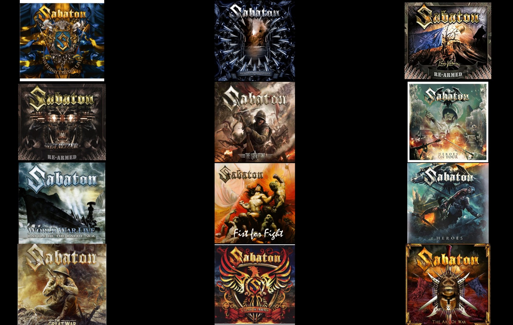

Sabaton YouTube
Sabaton YouTube
Sabaton – szwedzka grupa wykonująca muzykę z pogranicza power i heavy metalu. Tematyka większości utworów jest powiązana z wojną. Powstała w 1999 w Falun. Do 2016 zespół wydał osiem albumów studyjnych niejednoznacznie ocenianych przez krytyków muzycznych. W 2006 i 2007 roku uznana za najlepszy zespół hardrockowy w Szwecji. Grupa wielokrotnie występowała w Polsce.
Historia założenia
Grupa powstała w 1999 roku w Falun z inicjatywy wokalisty i klawiszowca Joakima Brodéna, gitarzystów Rikarda Sundéna i Oskara Monteliusa, basisty Pära Sundströma oraz perkusisty Richarda Larssona. Zimą 2000 roku w studiu Abyss muzycy zarejestrowali kilka utworów. Tego samego roku nakładem Underground Symphony ukazała się kompilacja pt. Fist for Fight. W 2001 roku Larsson odszedł z zespołu, a zastąpił go Daniel Mullback. 4 marca 2005 roku nakładem Black Lodge Records ukazał się debiutancki album formacji zatytułowany Primo Victoria. Wkrótce potem do grupy dołączył Daniel Mÿhr, który objął część obowiązków Brodéna. W ramach promocji grupa dała szereg koncertów w Niemczech i Szwecji w tym na festiwalach Szwecji Gates of Metal oraz Sweden Rock Festival.
Albumy
Skład
Joakim Brodén – wokalista
Tommy Johansson – gitarzysta
Christoffer Rörland – gitarzysta